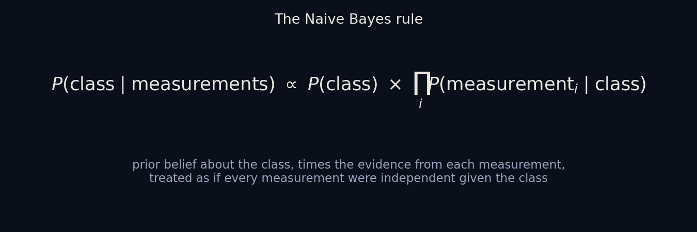
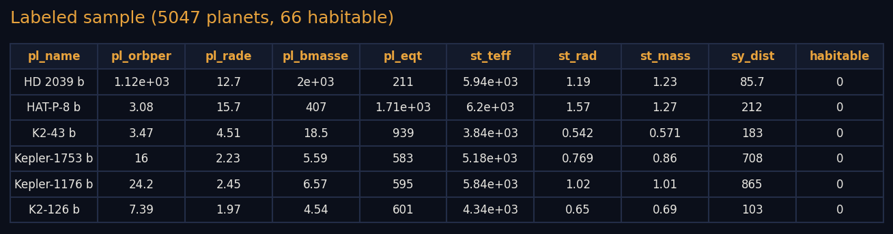
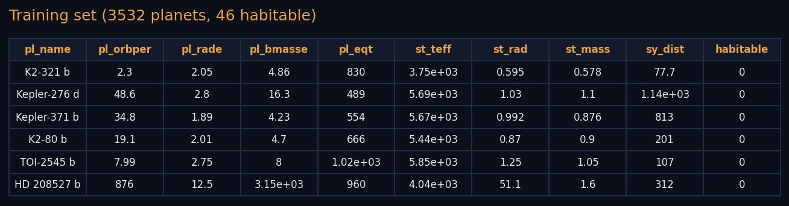
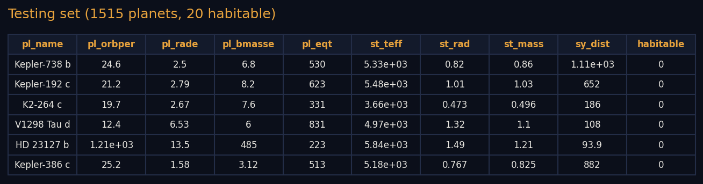
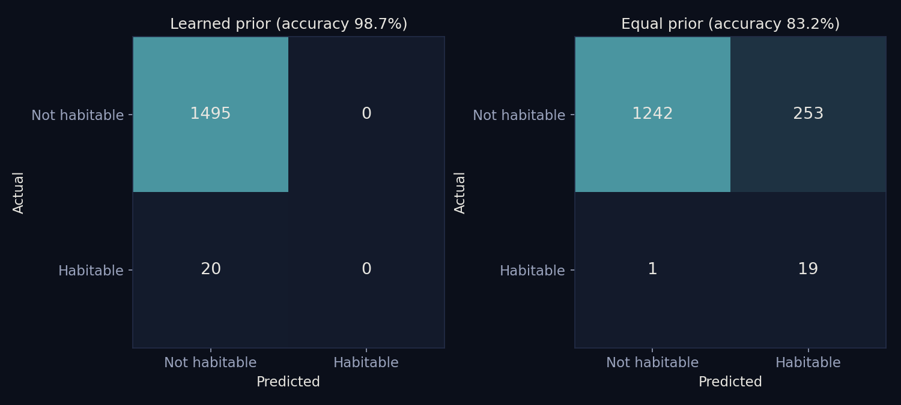

Naive Bayes
Naive Bayes
Overview
Naive Bayes is a supervised classification method: it learns from planets whose class is already known and then predicts the class of planets it has not seen. It applies Bayes' rule, which combines how common each class is overall (the prior) with how typical each measurement is for that class (the likelihood), and it makes one deliberately simple assumption: that once the class is known, the measurements are independent of one another. That assumption is rarely exactly true, since a planet's radius and mass are clearly related, which is where the word naive comes from, but the method often works well anyway, trains almost instantly, and needs relatively little data. It is widely used for sorting text, such as spam filtering and document topics, and as a quick baseline classifier on tabular data.

Two common versions differ in how they treat a measurement. Multinomial Naive Bayes treats each feature as a count, such as how many times a word appears in a document, and learns for each class how large each count tends to be. Because it works with counts, every feature value must be zero or positive. Bernoulli Naive Bayes treats each feature as present or absent, a simple yes or no, so it uses only whether something occurs and not how often, and it also counts the absence of a feature as evidence, which suits short texts and yes/no tags. Here the standard multinomial version is used, applied to planet measurements rescaled to a 0 to 1 range, to predict whether the Habitable Worlds Catalog lists a planet as potentially habitable from its eight physical measurements.
Data Prep
Supervised methods can only learn from labeled data, so every planet used here needs a known answer. The label comes from the PHL Habitable Worlds Catalog and was collapsed into a single yes/no value: a planet counts as habitable if the catalog lists it in either its conservative or its optimistic sample. Only planets the catalog has assessed, and that have all eight measurements, were kept, leaving 5,047 labeled planets. Of those, 66 are habitable (1.3%) and 4,981 are not.

The labeled data was then split at random into a training set (70%) and a testing set (30%). The training set is what the model learns from, and the testing set is held back to measure how well it does on planets it has never seen. The two sets must be disjoint, with no planet in both, because a model scored on planets it already learned from would look better than it really is. The split was stratified, which keeps the same small share of habitable planets in both sets, and a check in the code confirmed that zero planets appear in both. The training set has 3,532 planets (46 habitable) and the testing set has 1,515 planets (20 habitable).


Multinomial Naive Bayes needs non-negative numbers, so each measurement was log-transformed, for the same reason as in the clustering step, and then rescaled to run from 0 to 1 using the training set's minimum and maximum. Testing-set planets that fall outside the training range were clipped to 0 or 1. Data files: labeled_sample.csv, train_set.csv, and test_set.csv. The raw and cleaned files behind them are linked from Data Gathering and Cleaning & Prep.
Code
Data split: prep_train_test.py. Naive Bayes: naive_bayes.py. Both are written in Python and use pandas, scikit-learn, and matplotlib.
Results
Because the habitable class is so rare, two versions of the model were fit. The first learns its prior from the training set, where 98.7% of planets are not habitable. It predicted not habitable for all 1,515 testing planets, which gives an accuracy of 98.7%, exactly the score of a model that always guesses no, and it found none of the 20 habitable planets. The second version gives both classes an equal prior. Its accuracy fell to 83.2%, but it found 19 of the 20 habitable planets, a recall of 95%. The price was 253 non-habitable planets wrongly flagged, so only 19 of the 272 planets it flagged, about 7%, are actually habitable.

Conclusions
The first lesson is about the topic itself: habitable planets are so rare that a model can score 98.7% by saying no to everything, so accuracy alone says almost nothing about whether the model is useful for finding them. The second is that a planet's basic measurements narrow the field without picking winners. With equal priors the model catches nearly every habitable planet in the testing set, but it produces a long list of false alarms, which fits the earlier finding that planet properties form a continuum and not sharply separated groups. The independence assumption is also a poor match for these measurements, since size, mass, temperature, and orbit are closely linked, and that may contribute to the false alarms, though this was not tested directly. Two cautions apply. The catalog's own habitable criteria are built from quantities closely related to these same measurements, so part of what the model learns is the catalog's rule of thumb. And with only 20 habitable planets in the testing set, a single planet changes the recall by five percentage points, so these numbers are rough.